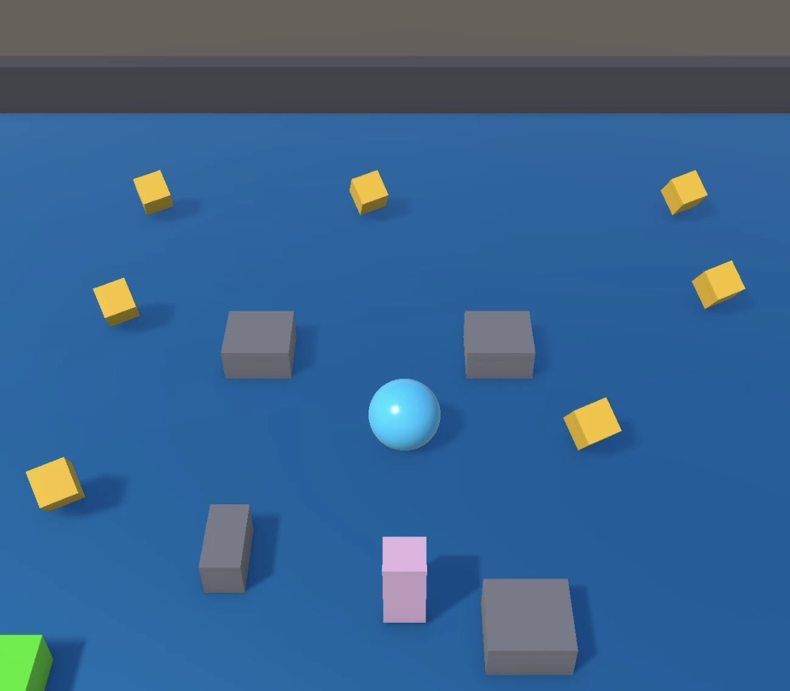

Roll a Ball Game

Description
For this assignment, I created my first interactive game using Unity, called Roll a Ball! The goal of this was to create an interactive experience between the player and objects and how they respond to one another in the game system. We were required to make a personal modification, I chose to create a shiny blue flooring because it looked cool and gave my game something different.
I made this change by going into my materials folder and creating it as a new material.
Three Key Takeaways
What was Easiest?
I felt that making the material and writing the code in C# was the easiest. Making the material was very simple but also as a CS major I am familiar with coding practices that make navigating between languages simple.
What was Hardest?
I felt that modifying shapes was the hardest. I felt this way because I'm still getting used to the Unity platform and getting the gist of the different nuances with using this software platform.
GameObjects, Components, and Scripts
GameObjects: Are containers that store an instance of a specified object used for gameplay.
Components: Are the functional pieces that define the behavior and appearance of a game object.
Scripts: Files containing c# code that run the functionality of whats happening in the Unity game engine.
Connecting to My XR Documentary
How These Skills Will Help
The skills from this assignment, like using Prefabs and Text, will help me create my XR documentary because it will make the documentary more engaging and interactive. This will ultimately help me tell a better narrative.
Ways I Could Use Unity for My Documentary
I could use Unity to create a scene thats important to the resident. I could also use it for a more immersive interaction for the audience to fully grasp the story of the resident.
How Interactivity Enhances Storytelling
Interactivity can make a documentary stronger because it gives the audience an opprtunity to interact with the space. It also gives the audience the opportunity to be in the shoes of the residents to fully understand their story.